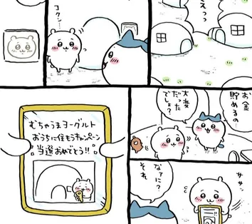

치이카와 소개
치이카와는 먼작귀에 등장하는 주요 캐릭터 중 하나입니다. 그 중에서도 주인공 격 캐릭터로, 농담곰의 축소판 같은 모습의 햄스터 캐릭터입니다. 이름은 '먼작귀'로 번역되었지만 캐릭터 이름은 그대로 치이카와로 번역되었습니다.
가끔 혼자서 얌빰빰 루빠루빠 같은 노래를 부르거나 탭댄스 비슷한 춤을 출 때가 있습니다. 신이 나면 친구들과 같이 춤을 추기도 합니다.
사실은 청약에 당첨되어 엄청 좋은 집에 삽니다.
동굴에 사는 하치와레와는 달리 야쿠르트 회사에서 주관한 청약에 당첨돼서 좋은 집에 삽니다. 아침마다 알림 방송을 듣고 일어나 마을 주민들과 체조를 하고 다시 가서 잠을 자는 일상을 즐깁니다.